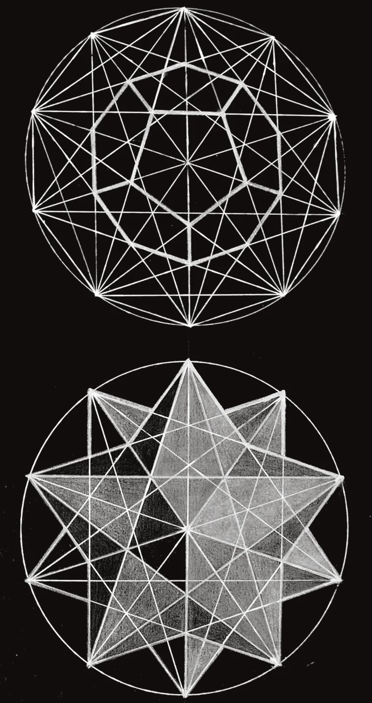

Family Constellations · one to one and in groups
Uncover the hidden patterns holding you back
Family Constellations sessions and coaching with Norina Shorter for career, relationships, health, and the patterns passed down through generations.

The issue in front of us often has older roots
Sometimes a stuck career, a repeating relationship pattern, or an illness with no clear cause has roots that go back further than we realise.
Read about Family Constellations
Beneath what looks like chaos there is often an order, waiting to be seen.
Patterns that keep repeating
You feel stuck in something for reasons you can’t explain, and want new insights that can finally lead to real change.
Family and relationships
You’re navigating complex dynamics with family, a partner, or colleagues, and need support understanding the hidden forces at play.
Health that hasn’t responded
You are looking for another lens on a condition that hasn’t shifted with other approaches.
Work and purpose
You want more clarity in your career, creativity, or direction.

Meet Norina
I’m a Family Constellations facilitator in Forest Row, working online and in person. I have spent nearly two decades working with people in need, and have held workshops and one to one sessions since 2023.
Read my storyJoin my newsletter
Occasional notes on Family Constellations, and news of upcoming workshops and events. Unsubscribe at any time.